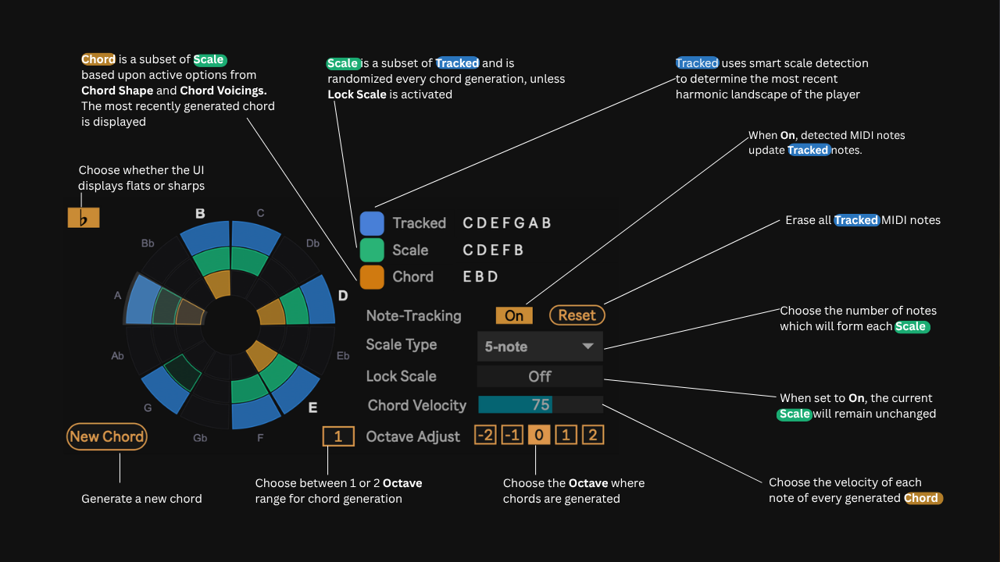
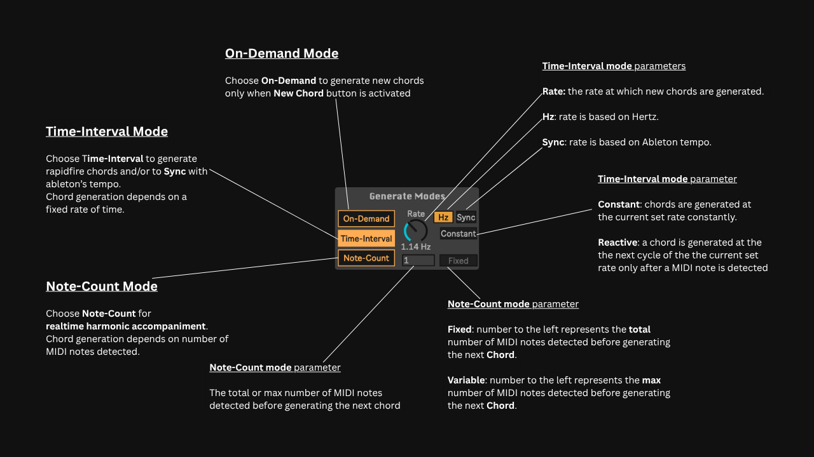
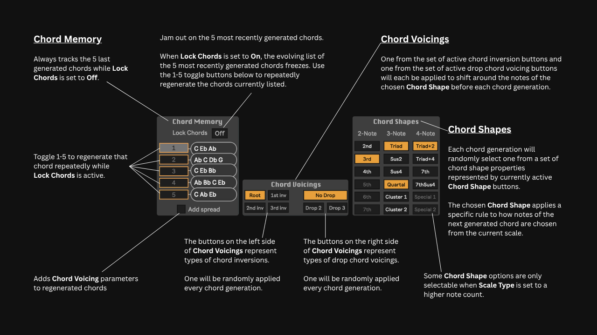

Table of Contents
1. Overview & Core Concept
Chord Kaleidoscope is a generative harmony instrument for Ableton Live that transforms melodic input into dynamic, real-time harmonic accompaniment through intelligent scale tracking and adaptive chord generation.
At high speeds, its adaptive chord-generation capabilities can also be used to create unique sound textures and rapid-fire melodies when applied to monophonic instruments.
2. Installation & Routing
Installation
Drag the Chord Kaleidoscope.amxd file into:
User Library > Presets > MIDI Effects > Max MIDI Effect
Basic Track Setup
Place Chord Kaleidoscope on a MIDI track before your software instrument (VST, AU, or native device) to hear the generated chords.
Playing Along with Generated Chords
Because Chord Kaleidoscope replaces incoming MIDI notes with generated chords, a single track cannot output both simultaneously when using software instruments. To hear both your raw playing and the generated chords, configure two tracks:
- Track 1: Instrument only (plays your direct keyboard input).
- Track 2: Chord Kaleidoscope + Instrument. Set its MIDI From to Track 1 and set Monitor to In.
Note: If you are triggering hardware via the External Instrument device, a single track can successfully handle both signals.
Recording the Generated MIDI
To capture the generated chords as a MIDI clip:
- Create a second MIDI track (Track 2).
- Set Track 2's MIDI From to the track containing Chord Kaleidoscope, and select Chord Kaleidoscope in the lower routing dropdown.
- Arm Track 2 and press Record.
3. Interface Reference
The interface is structured into five functional zones: Harmonic Display & Scale Tracking, Generate Modes, Chord Shapes & Voicings, Chord Memory, and Global Output Controls.
3.1 Harmonic Display & Scale Detection
The main circular visualization displays the 12 chromatic pitches across three color-coded concentric rings.

| Parameter / Element | Type | Function |
|---|---|---|
| Accidental Toggle (b / #) | Button | Toggles the UI display between flat (b) and sharp (#) note spellings. |
| Tracked (Blue Ring) | Display | Shows notes captured by smart scale detection based on your recent playing. |
| Scale (Green Ring) | Display | A dynamic subset of the Tracked pitch collection, re-randomized on chord generation unless locked. |
| Chord (Orange Ring) | Display | The active generated output chord, formed from a subset of the Scale layer. |
| Note-Tracking | Switch | Toggle 'Off' to lock the current harmonic pool so incoming MIDI notes do not overwrite the tracked scale. |
| Reset | Button | Instantly clears all currently tracked MIDI notes. |
| Scale Type | Dropdown | Sets the number of notes (e.g., 5-note, 7-note) that form each generated Scale. |
| Lock Scale | Switch | When set to 'On', freezes the current Scale selection, preventing re-randomization on subsequent chord generations. |
| New Chord | Button | Manually triggers the immediate generation of a new chord. |
3.2 Generate Modes
Chord Kaleidoscope features three operational trigger modes to control when new chords are produced.

- 1. On-Demand Mode: New chords generate strictly when the 'New Chord' button is pressed.
- 2. Time-Interval Mode: Generates rapid-fire or rhythmically timed chords based on time intervals.
- Rate Knob: Controls interval speed (up to 20 Hz).
- Hz / Sync Toggle: Switches rate calculation between continuous Hertz (Hz) or tempo-synced subdivision values (Sync) tied to Ableton Live. (Note: Ableton's transport must be actively running for synchronization to work).
- Constant / Reactive Toggle: Constant generates chords continuously at the set rate regardless of input. Reactive waits for incoming MIDI notes, then generates a chord on the next rate cycle.
- 3. Note-Count Mode: Real-time harmonic accompaniment triggered by incoming MIDI note activity.
- Threshold Value: Defines the count of detected MIDI notes needed to trigger a new chord.
- Fixed / Variable Toggle: Fixed requires the exact specified total number of MIDI notes to be detected before triggering the next chord. Variable triggers a new chord when up to the specified maximum number of MIDI notes are detected.
3.3 Chord Shapes & Chord Voicings
Once a Scale is defined, Chord Kaleidoscope applies structural rules using Chord Shapes and Chord Voicings to select and arrange final output notes.

Chord Shapes Matrix
During each generation cycle, the device randomly picks one active property from the Chord Shapes matrix:
| Note Category | Available Chord Shapes |
|---|---|
| 2-Note | 2nd, 3rd, 4th, 5th, 6th, 7th |
| 3-Note | Triad, Sus2, Sus4, Quartal, Cluster 1, Cluster 2 |
| 4-Note | Triad+2, Triad+4, 7th, 7thSus4, Special 1, Special 2 |
Note: Certain Chord Shapes are conditionally selectable depending on the selected Scale Type. For example, you cannot generate a 6th interval on a scale that only contains 5 notes.
Chord Voicings
Voicings shift notes around the selected Chord Shape. On each chord generation, the engine randomly selects one active Inversion and one active Drop Voicing:
- Inversions (Left Side): Root, 1st Inv, 2nd Inv, 3rd Inv
- Drop Voicings (Right Side): No Drop, Drop 2, Drop 3
3.4 Chord Memory
View the last 5 chords generated, or enable 'Lock Chords' to jam out with them.
- History Tracking: Automatically stores the last 5 generated chords when Lock Chords is set to Off.
- Lock Chords Toggle: Set to On to freeze the 5 current chords into memory.
- Slot Buttons (1–5): Re-trigger the stored chord in that memory slot on demand during live performance.
- Add Spread Checkbox: When enabled, applies active Chord Voicings (inversions/drop rules) to stored chords when re-triggered from memory slots.
3.5 Global Output Controls
- Chord Velocity: Sets uniform MIDI velocity output (range: 1–127) for every note of a generated chord.
- Octave Adjust (-2, -1, 0, 1, 2): Transposes output pitch up or down by octaves relative to the center pitch.
- Octave Range (1 / 2): Selects whether generated chords remain strictly in the selected 'Octave Adjust' boundary (1), or whether they also have the chance of alternatively being placed in the octave boundary directly above (2).
4. How Chord Generation Works
Chord Kaleidoscope generates each chord through a sequence of four stages: Root Selection, Chord Shape Selection, Chord Voicing, and Output Adjustment.
4.1 Root Selection
When a new chord is generated, Chord Kaleidoscope first selects a random scale degree from the currently active Scale. This note becomes the root of the generated chord.
For example, if the current Scale is C Major (C D E F G A B) and E is randomly selected as the root, all subsequent Chord Shape calculations begin from E.
The selected root does not necessarily determine the final lowest note of the chord. Chord Voicings and Output Controls are applied later and may move individual notes into different octaves.
4.2 Chord Shape Selection
After selecting a root, the device randomly selects one active Chord Shape from the matrix.
Chord Shapes determine which scale degrees are included relative to the root. They do not use fixed semitone intervals. Instead, they move through the notes of the current Scale.
For example, the Triad shape uses the scale-degree pattern: 1 – 3 – 5
The randomly selected root is always treated as position 1.
This means that the same Chord Shape can produce different harmonic structures depending on the selected Scale and Root.
4.3 Scale-Degree Patterns
Each Chord Shape has its own scale-degree pattern. The following table describes the patterns used by Chord Kaleidoscope.
| Chord Shape | Pattern | Chord Shape | Pattern |
|---|---|---|---|
| 2nd | 1 – 2 | Cluster 1 | 1 – 2 – 3 |
| 3rd | 1 – 3 | Cluster 2 | 1 – 3 – 4 |
| 4th | 1 – 4 | Cluster 3 | 1 – 2 – 4 |
| 5th | 1 – 5 | Triad + 2 | 1 – 2 – 3 – 5 |
| 6th | 1 – 6 | Triad + 4 | 1 – 3 – 4 – 5 |
| 7th | 1 – 7 | 7th | 1 – 3 – 5 – 7 |
| Triad | 1 – 3 – 5 | 7th Sus4 | 1 – 4 – 5 – 7 |
| Sus2 | 1 – 2 – 5 | Special 1 | 1 – 3 – 5 – 8 |
| Sus4 | 1 – 4 – 5 | Special 2 | 1 – 3 – 6 – 8 |
| Quartal | 1 – 4 – 7 |
For example, the Triad + 2 shape uses the pattern 1 – 2 – 3 – 5. Starting from C in C Major produces C – D – E – G. Starting from E produces E – F – G – B.
4.4 Chord Voicing
After the Chord Shape determines which notes belong to the chord, active Chord Voicing rules are applied. Chord Voicings change the octave placement of the notes without altering the selected scale degrees.
| Chord Size | Inversion | Octave Shift | Drop Voicing | Octave Shift |
|---|---|---|---|---|
| 2-Note | Root | 0, 0 | No Drop | 0, 0 |
| 1st Inversion | +12, 0 | Drop 2 | -12, 0 | |
| 3-Note | Root | 0, 0, 0 | No Drop | 0, 0, 0 |
| 1st Inversion | +12, 0, 0 | Drop 2 | 0, -12, 0 | |
| 2nd Inversion | +12, +12, 0 | — | — | |
| 4-Note | Root | 0, 0, 0, 0 | No Drop | 0, 0, 0, 0 |
| 1st Inversion | +12, 0, 0, 0 | Drop 2 | 0, 0, -12, 0 | |
| 2nd Inversion | +12, +12, 0, 0 | Drop 3 | 0, -12, 0, 0 | |
| 3rd Inversion | +12, +12, +12, 0 | — | — |
Inversions shift the lowest notes of the chord up by one full octave (+12 semitones), changing the order of the pitches.
Drop Voicings lower specific notes by one octave after the chord shape and inversion have been determined. For example, a three-note chord using Drop 2 changes from C – E – G to C – E' – G, where the designated note is moved down one octave relative to the other tones.
4.5 Final Output
After Root Selection, Chord Shape, and Chord Voicing have been applied, the generated notes are passed through the Global Output Controls (Chord Velocity, Octave Range, and Octave Adjust) before being sent as final MIDI.
4.6 Example: Complete Chord Generation
Suppose the current Scale is C Major (C – D – E – F – G – A – B):
- Root Selection: The device randomly selects E as the root.
- Shape Selection: The device randomly selects the Triad + 2 shape. Its scale-degree pattern is
1 – 2 – 3 – 5. - Shape Application: Starting from E, applying this pattern pulls the following notes from the scale:
E – F – G – B - Inversion Application: The device randomly selects a 1st Inversion. This takes the lowest note (E) and raises it by one octave, shifting it to the top of the chord.
Result:F – G – B – E(+12) - Drop Voicing Application: A Drop 2 voicing is randomly selected. This rule isolates the second-highest note in the current stack (which is B) and drops it down by one octave, moving it to the bottom of the chord.
Final Result:B(-12) – F – G – E(+12)
The resulting notes are passed through the Global Output Controls before being output as MIDI. By separating harmonic content (Chord Shapes) from physical arrangement (Chord Voicings), the device ensures that while the specific octaves and inversions may vary, the underlying harmonic structure remains logically tied to your active scale and selected parameters.
5. Troubleshooting & FAQ
Q: Why are some Chord Shapes grayed out or unselectable?
A: Certain 3-note or 4-note Chord Shapes require a higher note count in the selected scale. Increase the Scale Type setting (e.g., to 7-note or 8-note) to unlock them.
Q: Why are no chords being generated?
A: Check the 'Generate Mode' module. The plugin initializes to 'On-Demand' mode where you must click 'New Chord' to generate a chord. Switch the mode to 'Time-Interval' or 'Note-Count' for repeated or reactive chord generation.
Q: I have Chord Kaleidoscope on an Ableton MIDI instrument track, and my playing won’t make any sound.
A: As a MIDI effect, Chord Kaleidoscope replaces your incoming MIDI with generated chords rather than passing it through to internal Ableton instruments. To hear both your live playing and the generated chords, use two tracks:
- Track 1: Instrument only (plays your raw input).
- Track 2: Instrument + Chord Kaleidoscope (plays the generated chords). Set Monitor to In (or Auto with the track armed).
Note: You can hear both your own playing and generated chords on the same track when routing to an external hardware instrument.
Q: Why do I see scale tones (green) activated over inactive tracked notes (blue)?
A: This can happen for a few reasons:
- Lock Chords may be active in the 'Chord Memory' module.
- Lock Scale may be active.
- Your scale type count (e.g., 6-note) may exceed the current amount of tracked notes, so scale tones are generated outside of the tracked notes set. This is by design! Explore the harmonic chaos of notes shifting continuously outside the current scale, or alternatively, play more notes to increase the tracked note set count.
Q: How do I route MIDI from Chord Kaleidoscope to an instrument?
A: Create a second MIDI track with your chosen instrument. Set its 'MIDI From' dropdown to the track containing Chord Kaleidoscope, then set the monitor to In. This is standard practice for recording MIDI output of Ableton MIDI effects.
Q: How do I get the last chord generated to stop without generating a new chord?
A: Simply deactivate the device to stop the chord. By design, Chord Kaleidoscope only sends MIDI note-off messages for the previous chord when the subsequent chord is generated.
Q: I switched to 'Sync' mode, but no chords are generating.
A: Ableton's transport must be actively running for tempo synchronization to work.
6. Support & Feedback
Please feel free to reach out with any thoughts, questions, concerns, or general feedback at:
Hellojoywolf@gmail.com
This is my first-ever software release, so bugs are probably inevitable. Rest assured, I will collect all feedback and apply important fixes and updates in future releases. I greatly appreciate you taking a chance with my product!